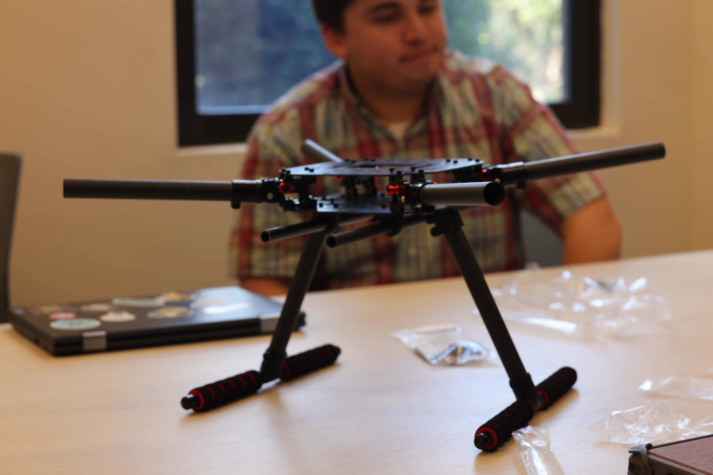

Topological and Environmental Reconnaissance Aircraft (WIP)

In collaboration with JAL Berry Farms, T.E.R.A.
is a computer-vision based agricultural drone. Using depth-analysis and machine learning,
T.E.R.A. will be able to detect harvestable berries, topological data, and soil moisture when completed.
T.E.R.A. is a promising technological endeavor to offer a cost-effective solution to farming.
The Happy Caterpillar


Happy Caterpillar was our exhibit for the STEAM competition and STEM Family Day. The game is a
recreation of the game Snake running on an Arduino microcontroller and displayed on a strip
of NeoPixel LEDs. The cabinet was designed and painted in-house. To create the defined blocky look,
a
custom grid was 3D-printed and laid on top of the LED strips. For our efforts, we were voted as the
favorite exhibit of the show and helped invigorate many people's enthusiasm for STEM.